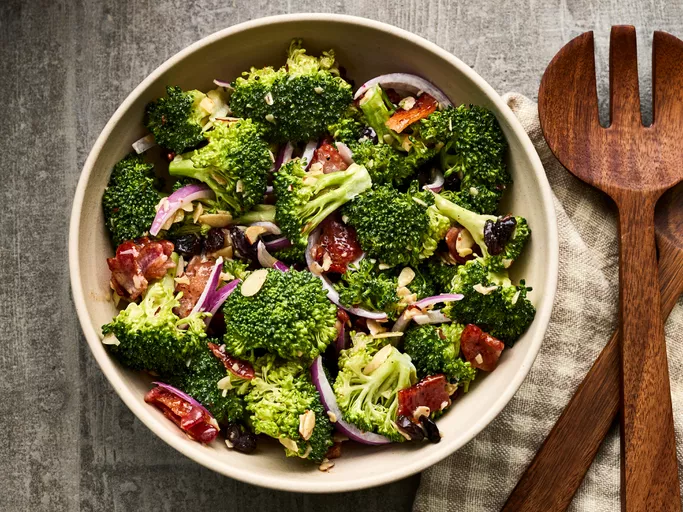

Candied Yams

Description
This candied yams recipe is a simple and quick way to enjoy a Thanksgiving favorite! Canned yams or sweet potatoes may be used.
Ingredients
- 1 (29 ounce) can sweet potatoes, drained
- ¼ cup butter, cut into pieces
- ½ cup brown sugar
- 1 ½ cups miniature marshmallows
Steps
- the syrup: This is a key move so your candied yams don't turn out runny due to too much liquid in the baking dish.
Place the drained yams into a medium baking dish.
- Dice the butter: Cut the cold butter into small pieces and distribute them evenly over the yams.
- Sprinkle the brown sugar: Measure the brown sugar by packing it firmly into the measuring cup.
Then transfer it to a bowl to break it up and make it easier to sprinkle.
This is a good opportunity to crush any lumps in the brown sugar.
- Cover with mini marshmallows: This is where you might use more than the amount of marshmallows called for in the recipe, depending on how much surface area you're covering.
You want them pretty close together so they'll make that signature toasted marshmallow topping that marshmallow-lovers love.
- Bake: Because the yams are fully cooked already, what you're really doing is heating them up and toasting the marshmallows until they're golden and melty.